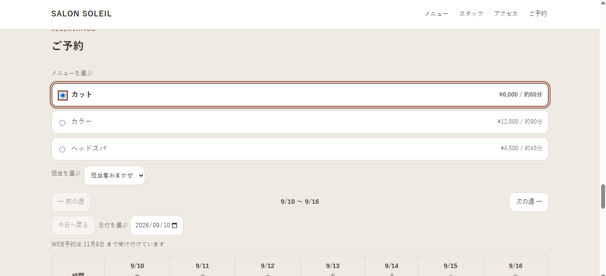
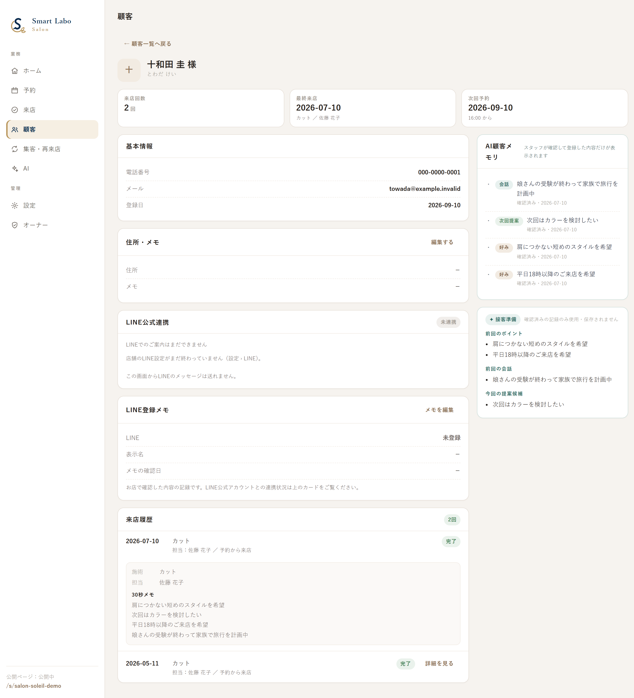
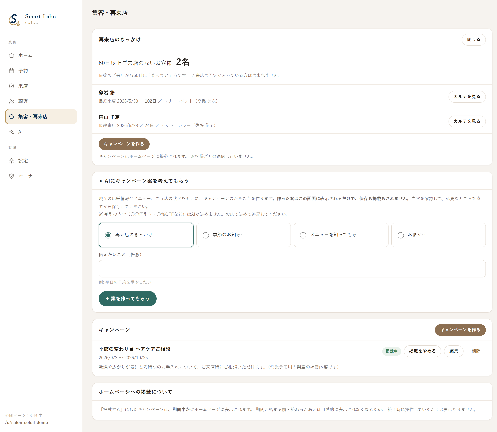

Googleマップと検索から、お店を知っていただく
FOR SALON OWNERS
待つ集客から、攻める集客へ。
HP・Googleマップ集客・予約・顧客管理・再来店まで。
サロン経営に必要な仕組みを、ひとつにつなげます。
Smart Labo Salonは、HPを作って終わりにせず、見つけてもらうところから、また来ていただくまでを支えるフルパッケージです。
こんなお悩みはありませんか
THE PROBLEM集客サイトに依存している
HPを作っても予約につながらない
予約情報がバラバラになっている
前回来店時の会話を思い出せない
顧客情報が店舗に蓄積されない
再来店へのアプローチができていない
Smart Labo Salonは、これらを別々のツールで管理するのではなく、ひとつの流れとして整えます。
お店に、この流れをつくります
THE FLOWホームページとマップで、来店の判断材料が揃う
スマートフォンから、迷わず予約まで進める
お客様の情報と接客内容が、お店に残る
残した情報を、次のご来店につなげる
回すほどに、お店に 顧客基盤 と 集客力 が積み上がっていきます。
大切にしている、三つの考え方
OUR APPROACH大手広告への
依存からの脱却
大手の集客媒体に頼りきらなくても回るお店を目指します。ただし今すぐ解約する必要はありません。併用しながら、段階的に。
お客様の情報を、
お店に残す
予約・来店履歴・接客メモを一か所に。スタッフが替わっても引き継げる形で、お店の資産として積み上げます。
待つ集客から、
攻める集客へ
新規のご予約を待つだけでなく、来ていただきたいお客様へ、こちらからご案内を届けられる状態を目指します。
美容室エステサロンリラクゼーションアロママッサージ整体・整骨院ネイルサロンまつ毛サロンパーソナルジム
実際の画面で見る、店舗の流れ
IN USE予約を受けるだけではありません。顧客情報を残し、次の接客と再来店につなげます。

メニューと担当者を選び、予約へ
メニュー・料金・施術時間を表示し、担当者の選択から予約へ進めます。

前回の会話や好みを、接客に活かす
来店履歴・接客メモ・好み・次回提案を顧客情報として確認できます。

再来店候補を把握し、次の案内へ
しばらく来店していないお客様を把握し、再来店のきっかけをつくります。
※掲載画面は実際のSmart Labo Salonの画面キャプチャです。
2回目のお客様を、初対面にしない。
接客記憶予約情報を貼るだけ。前に来たお客様なら、前回の記憶がすぐ戻ります。
どんな話をしたかを、次の接客のきっかけに。
お客様に合わせた提案を、スタッフ全員で共有。
しばらく来店していないお客様を把握し、次のご案内につなげる。
集客から再来店まで、ひとつの仕組みで
SERVICE MENUホームページ
店舗の魅力を伝え、予約につながる自社の入口をつくります。
MEO・Googleマップ集客支援
HPを作って終わりにせず、Googleマップから見つけてもらうための整備・支援を行います。
予約・顧客情報
予約情報を受け取り、顧客情報として自社に蓄積します。
前回の会話・好み・注意事項
予約情報の取込、過去顧客との紐づけ、スタッフ間共有まで対応します。
再来店につなげる
30・60・90・180日などの来店状況を把握し、待つだけの集客から一歩進みます。
店舗でのご利用
店舗のパソコン・iPadで利用でき、導入時の設定と使い方をサポートします。
今後追加を予定している内容： AIを活用した顧客情報の整理／再来店候補の抽出／空き時間に合わせたご案内／クーポン配布／売上分析など
※今後の開発予定で、現在ご利用いただけるものではありません。
まず2か月、実際に使ってご確認ください
PRICESmart Labo Salon フルパッケージ
最初の2か月 0円3か月目以降 29,800円／月（税別）
Smart Labo Salon・HP保守・MEO／Googleマップ集客支援をまとめて提供します。
Smart Labo Salon 19,800円HP保守 5,000円MEO支援 5,000円
※2か月の無料期間は、実際に店舗で使って価値をご確認いただくための期間です。
※集客数・売上・検索順位を保証するものではありません。
ご利用開始までの流れ
STARTING資料を見る・ご相談
サービス内容や現在の運用を確認します。
内容の確認・お見積り
必要な範囲と料金をご案内します。
設定・ご利用開始
店舗に合わせた初期設定と使い方をご案内します。
TRY FOR TWO MONTHS
まずは2か月、
0円でお試しください。
実際に店舗で使って、価値をご確認いただいてから続けるかお決めいただけます。